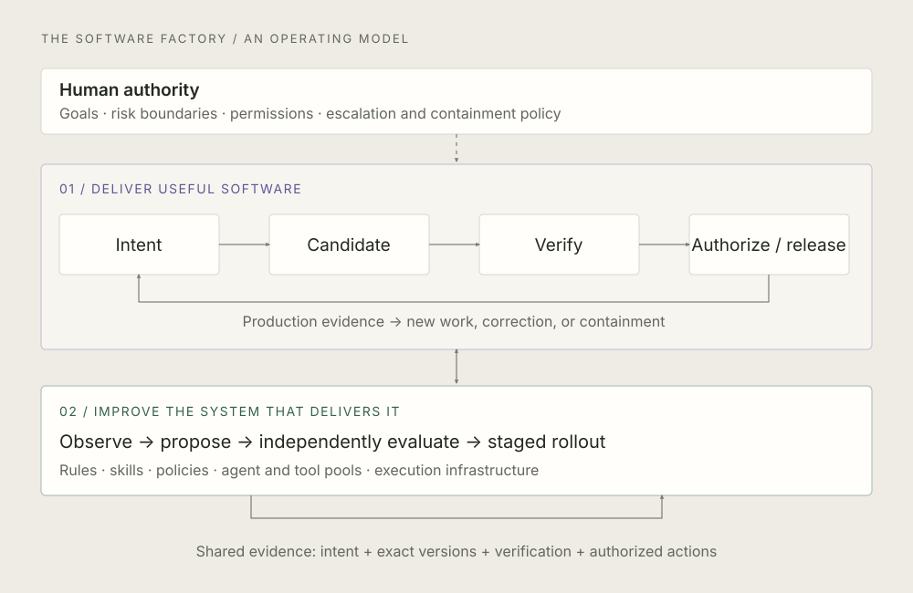
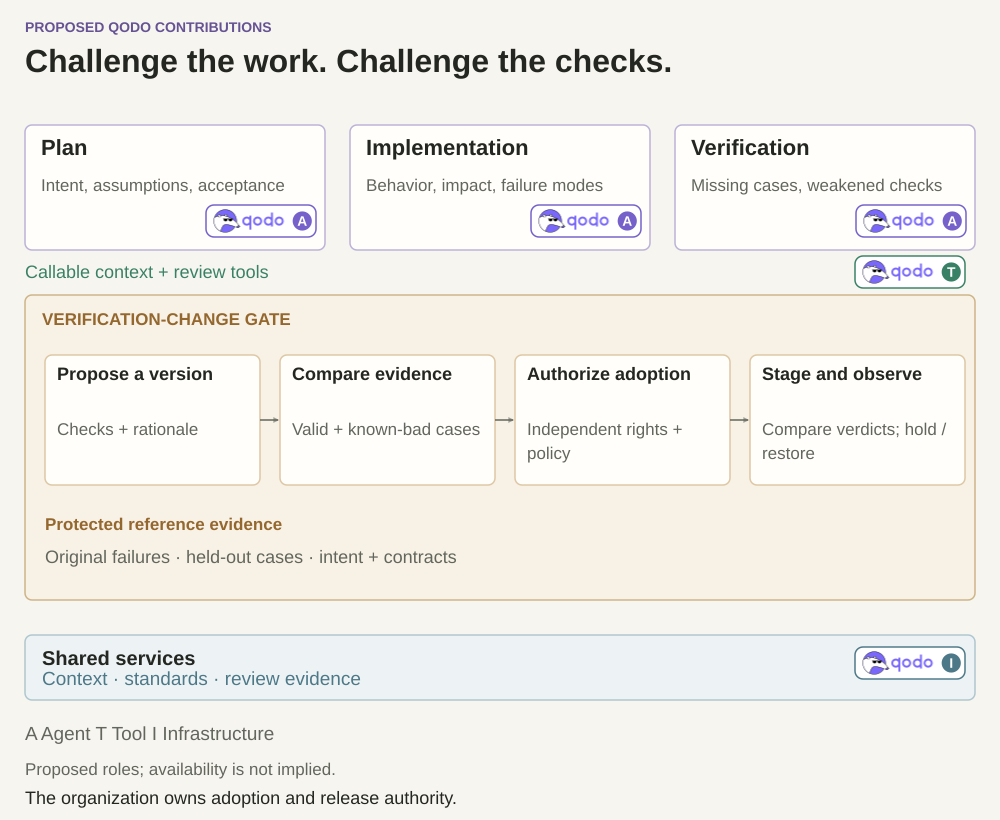

Reading: Redesigning source control at Anthropic, published October 13, 2026, updated October 15. Anthropic describes Scion, its internal source-control system, and Antique, its review tool. It reports that agent-driven development exposed infrastructure bottlenecks, prompting a redesign around server-side operations, sparse workspaces, and immutable data. It also describes component-monitoring agents and a greater reliance on post-merge, pre-deploy testing.
Below is my assessment and proposed operating model. I have not independently validated Anthropic’s performance claims.
I keep coming back to a question: if we make writing code dramatically faster, what exactly becomes faster for the company?
Sometimes the answer is delivery. Sometimes it is the queue in front of the next constraint. More agents can produce more candidates, more conflicting changes, more review findings, and more infrastructure work. The useful question is whether we are getting better at turning intent into working software, at an acceptable cost and risk.
This is why I find this article interesting. I read it as a case study in what happens when the system around coding becomes a serious engineering problem. My takeaway is that the software factory itself becomes something we have to engineer, operate, and continuously improve. That also makes it worth being precise about what we should copy.
The factory has two jobs
The way I think about a software factory is that it has two connected jobs. One is to deliver useful software. The other is to improve the system that delivers it. They share evidence, infrastructure, and organizational constraints, but they need different evaluation criteria.
The delivery loop might implement a feature or fix a vulnerability. The improvement loop might discover that an agent repeatedly lacks context, replace an inefficient tool, strengthen a verification policy, or improve the way workspaces are provisioned. Success in the second loop should show up in the first: better outcomes, fewer failures, less human intervention, or lower total cost.
This is where I see the Software Factory Engineer becoming a distinct discipline. The job is to build, with the engineers across the organization, the thing that builds the thing. Platform engineering experience is highly relevant. The additional responsibility is to make the delivery system capable of acting, learning from its results, and improving within explicit authority.


Give agents better interfaces to the system
One design choice in the Scion article is especially useful: repository questions can be answered through a service, without a full local checkout. I would apply that principle well before considering a new version-control system.
Suppose a review agent needs to understand a dependency change. It should be able to ask for the relevant diff, ownership, callers, and related history through stable, permissioned interfaces. Materializing a whole workspace to answer a metadata question adds latency, cost, and another place for environment failures. A good interface should also identify the exact revision behind its answer, so the agent cannot accidentally combine facts from different states.
Execution can still require a real workspace. I would make that workspace cheap, isolated, and scoped to the task. But the scope of the workspace must not become the scope of verification. A two-line change in a shared library can affect services the agent never opened. Dependency-aware verification has to reach beyond the files the agent happened to read.
A commit is too small to carry the whole job
For my architecture, the coordination unit is a work package. It connects the requested outcome, acceptance criteria, related code changes, dependencies, build artifacts, verification evidence, and permitted actions. A commit is part of that record. A release may span several commits and repositories.
Consider a change to an API response. The backend patch passes its checks, while a client update assumes the new response is already live. Both patches can be locally reasonable and still produce a bad rollout. The work package needs to express the compatibility condition and the deployment sequence. Otherwise, we are coordinating files and hoping that the outcome follows.
Evidence also needs an identity. A test result should say which artifact it tested, under which environment and policy. An approval should describe what action it authorizes and against which version. If a dependency, configuration, or candidate changes, the factory must determine which evidence remains valid. Reusing a green result because a branch still has the same name is not a sufficient rule.
This is an additional coordination layer I would put around source control. It should remain useful whether the underlying system is Git, Scion, or something else.
The factory needs three kinds of pressure
I distinguish forward pressure, backpressure, and verification pressure. The distinction helps explain what starts work, what redirects it, and what gives an agent a useful signal for its next attempt.
- Forward pressure: customer requirements, product goals, and opportunities that create demand for a change.
- Backpressure: crashes, bug reports, performance regressions, and production feedback showing that reality differs from what we intended.
- Verification pressure: tests, linters, security checks, review findings, risk assessment, and rollout observations that help determine whether a candidate is acceptable.
These are roles for signals. An agent can produce more than one kind. A customer-feedback agent might identify a new capability worth building or an existing behavior that is failing. A vulnerability detector generates evidence and proposed work; the fix agent needs separate authority to change and release software.
I would connect component-monitoring agents to both loops. A cache-health agent might notice rising timeouts and open work with the observation, affected versions, and proposed response. Pausing a rollout or changing the cache configuration would require separate permissions. Monitoring becomes much more useful when the path from a signal to an authorized response is clear.
The agent’s hill climb is only useful if the outcome is meaningful. It is easy to optimize for fewer findings by weakening the checks, or for passing tests by changing the tests. I want the factory to improve its verification, but it must preserve the distinction between proposing a new criterion and earning permission to use it.
Faster integration needs a credible release boundary
Anthropic’s move toward post-merge, pre-deploy testing is a useful provocation. I would be open to optimistic integration for appropriate work. I would insist on being explicit about what a merge authorizes.
Take two changes that independently pass but interact badly. Rapid repair is valuable while they are inside an isolated integration environment. The risk changes if a merge can deploy a service, run a migration, publish a package, or alter a privileged workflow. In that case, the release boundary has effectively moved upstream. Calling the next step “pre-deploy” does not create isolation.
I would require the factory to verify the coherent artifact set it intends to release, including relevant configuration and migrations. Then I would use a rollout appropriate to the failure mode: staged deployment, canaries, scoped feature flags, compatibility checks, and a tested recovery path. A flag will not undo a destructive data migration. A revert may not remove an externally published artifact.
Changes to credentials, policy enforcement, or the verification system itself deserve protection before they can affect that boundary. Otherwise, the system doing the work can also change the conditions under which its work is accepted.
The factory should improve itself. Under what authority?
This is the part I would make more visible in a software-factory architecture. The software factory (SWF) improvement plane should be able to propose and, where authorized, make changes to the agent pool, tools, execution infrastructure, and verification pressure. It should also improve rules, skills, and policies stored as versioned artifacts.
For example, repeated vulnerability findings might justify a specialized detection agent and a separate fix agent. Repeated context failures might justify better retrieval or a different workspace strategy. Neither requires a universal “better agent.” We need evidence that a specific change improves a specific class of work.
I would give each factory change a candidate version, representative evaluations, an independent decision about acceptance, and a staged rollout. The proposer should not be able to silently relax the evaluation that decides whether its proposal succeeds. Humans define the authority boundaries and can inspect or revise them; agents can operate within those boundaries without waiting for a person at every step.
Observability belongs between the human plane and the SWF plane. Both need to see what happened, why a decision was made, what evidence was used, and what changed afterward. Short-term session memory can retain review notes and failed attempts. Long-term knowledge should preserve validated lessons and incident history, with provenance and a way to correct stale conclusions. A confident memory of a wrong lesson can make the factory consistently worse.
Who checks the checking system?
Suppose a change fails ten tests. The factory weakens their assertions until they pass. The dashboard improves, while the defect remains. This is the uncomfortable question inside a self-improving factory: how does it demonstrate improvement when it can also change the measure of improvement?
I want independent challenge at three points in the work:
- Challenge the plan. Does it address the intended outcome? Are the assumptions, acceptance criteria, dependencies, and rollout strategy sound? Implementation and verification can otherwise agree on the wrong solution.
- Challenge the implementation. Does the actual change satisfy that intent across the affected system, including interactions and failure behavior beyond the edited files?
- Challenge the verification. Would the checks detect a materially wrong implementation? Look for missing cases, weakened assertions, skipped checks, narrower coverage, and changed risk thresholds.
The factory should still improve its tests. Existing tests can be flaky, obsolete, or based on an incorrect assumption. I would treat a change to the checking system as its own versioned work package, with a specific claim about what improves and what might stop being detected.
Run the existing and proposed checks against protected reference evidence: valid behavior, known failures, and deliberately broken implementations. Investigate where their judgments differ. Can the new checking system still recognize software we know is wrong? The original defect should remain detectable, or the expected behavior should have a separately authorized change. Representative held-out cases can help test whether the improvement generalizes; a passing reference set is still evidence with limits.



Independence needs to exist in authority and evidence. A second agent working from the same mistaken specification can repeat the same mistake. A different model alone does not establish independent verification. The proposer should not be able to rewrite the protected reference set or acceptance policy and then use that change to certify itself. Accountable owners decide consequential changes to those boundaries; routine improvements can operate under preauthorized rules.
I would make the adoption path explicit: propose a verifier version, evaluate it against protected reference evidence, independently authorize its adoption, then stage and observe the result. The decision record should preserve the candidate, reference-set and policy versions, changed verdicts, acceptance rationale, and recovery conditions. The active verification boundary changes only after that decision.
Basic observability belongs in this first step. We need to know what changed, which checks ran or were skipped, which evidence was used, and why a result was accepted. Richer production-monitoring agents can follow. Production feedback then helps expose failures the pre-release checks missed.
Design for the day the services disagree
My concern with any highly connected factory is how it behaves when evidence or control services become unavailable. An agent might still have code, a cached policy, and an old approval while the identity service or verification service is down. What exactly is it allowed to do?
I would define degraded modes by action and risk. Some work can continue against a stable snapshot. Some results can be prepared and held. A privileged release might require fresh evidence that cannot be reconstructed locally. The important thing is that losing access to the service enforcing a boundary does not expand the agent’s authority.
Factory evaluations should include stale approvals, concurrent edits, missing telemetry, unavailable tools, exhausted budgets, and failed rollback. They should test whether the system detects uncertainty, stops the right actions, preserves evidence, and recovers safely. Happy-path completion rate tells us little about those properties.
This also changes how I think about escalation. Asking a human is sometimes the right action, but a message is not containment. If the human is asleep, the system still needs a bounded response: pause a rollout, isolate a job, revoke a scoped capability, or hold a candidate. The appropriate response depends on the failure.
What would make this L4?
For this review, I use L4 to mean that the factory can independently execute, verify, and deliver defined classes of changes within explicit organizational boundaries. It knows when judgment is needed and can contain the situation while waiting for it. This is a working definition for this proposed architecture, not a claim of an industry-wide standard.
By that definition, I would not infer L4 from this case study. The article still places humans in every change review. That may be an excellent operating choice. It leaves a different question unanswered: which classes of work can complete safely without timely human intervention?
I would assess autonomy per workflow. A factory could be highly autonomous for dependency updates under a narrow policy and require substantial human judgment for authorization logic or data migrations. “Human approved” also needs context: did the person resolve a real ambiguity, make a consequential tradeoff, or rubber-stamp a result because the volume was impossible to review?
The goal should be to reserve human attention for decisions where it changes the outcome, while preserving accountability for the boundaries the organization chooses.
Build versus buy is part of the engineering job
Anthropic explicitly cautions that its workload and internal token economics are unusual, and that Scion is not a general replacement for Git. My first move would be to measure where a factory is constrained, then compare improving existing tools, buying a capability, and building one. A spectacular infrastructure project elsewhere does not establish the economics for a different environment.
The Software Factory Engineer should be expected to buy external solutions when they solve the problem well. Building the thing that builds the thing does not require owning every component. It requires owning the system-level decisions: interfaces, evidence, permissions, failure behavior, cost, and the ability to replace a component.
BYO-cloud, BYO-agent, and BYO-keys fit here as controlled interfaces. A human or the SWF plane could propose another agent. Registering that agent should establish its capabilities, permissions, data access, evaluation results, and rollout policy. A key should be a scoped secret reference managed by the execution environment, rather than something copied into the agent’s working context.
I would measure accepted outcomes, escaped defects, recovery time, total human attention, and total cost. More merged changes can indicate capacity. It can also indicate rework. If a factory doubles its output while tripling the effort needed to understand and repair it, we have more engineering to do.
What I would change in this architecture
I would make four additions explicit. First, source-control and workspace services as named infrastructure capabilities, with versioned answers and clear permissions. Second, dependency-aware integration and release verification tied to the work package. Third, a separate adoption gate for changes to the checking system, evaluated against protected reference evidence. Fourth, degraded-mode and containment policies that remain meaningful when the usual services or people are unavailable.
I would also make the improvement loop impossible to miss. It must connect to verification, rules, skills, policies, agent and tool pools, and the execution environment. Those connections represent real authority to change the factory, so they need observable decisions and controlled rollout.
My view after reading the article: source control belongs in the software-factory conversation. So do the economics and consequences of changing it. I would take the interface and operating-model lessons seriously, then require evidence that each change makes the delivery system better.
That is the engineering challenge I find most interesting: a factory that can improve the way it works, while remaining accountable for the software it delivers.
Feel free to copy, adapt, and challenge it.
See a weak assumption, a missing failure mode, or a better way to explain this? Suggest a change to this review through a pull request, or open a discussion as an issue.
Source and scope. This is an independent review of Anthropic’s article, read November 7, 2026. The architecture, examples, and recommendations here are my own interpretation; they do not describe an implementation I have audited. The diagrams are original, vendor-neutral layouts. They present a conceptual architecture, without describing any company’s internal implementation or product plans. I am Qodo’s co-founder and CEO. This article expresses my perspective and is not a product evaluation.